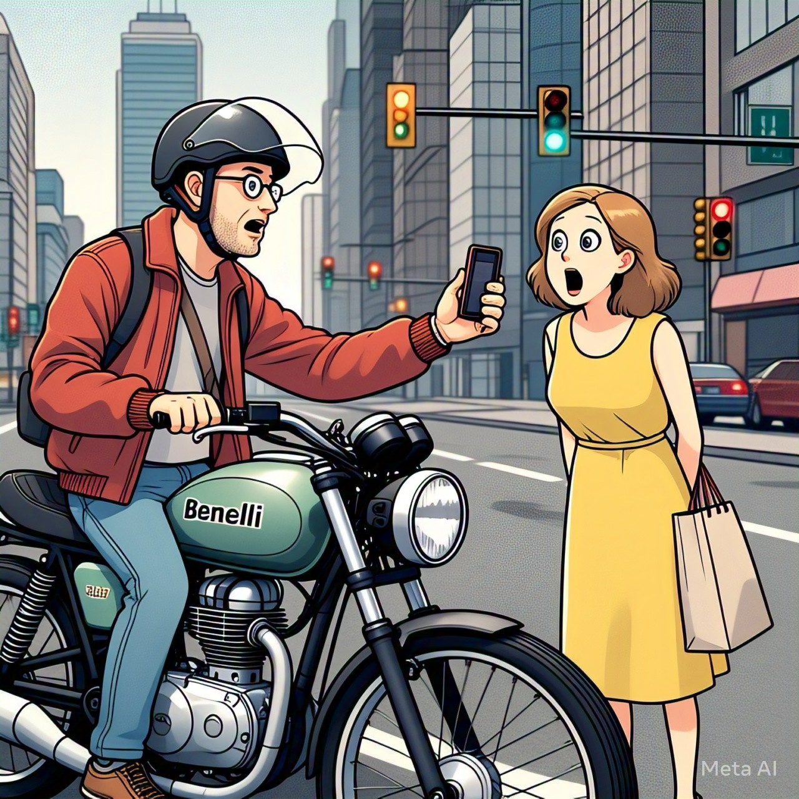
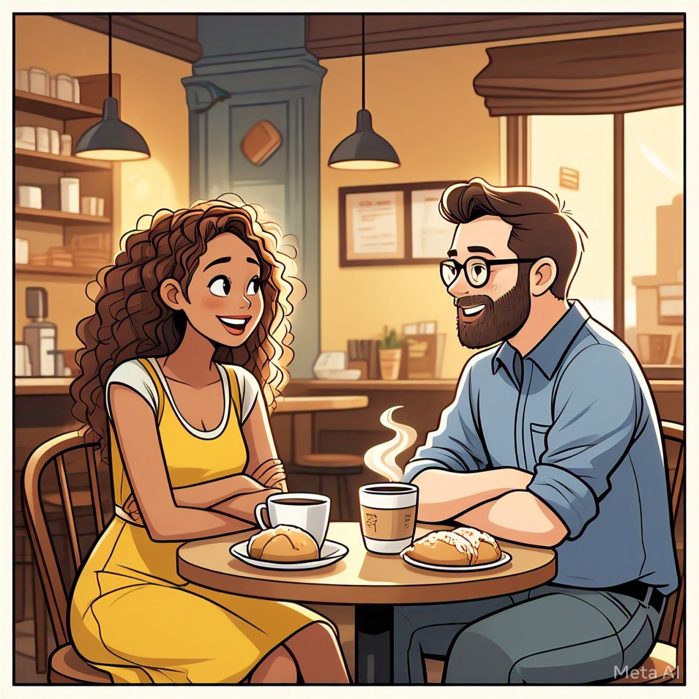

Okkk....Hi heloooo let me tell a story for you.... Oka ammayi asal epudu jaraganattu antha dairyam tho vachesindi bayataki chalaa mondi ga enda lo thana bandi kosam, adhee time lo akkada unna andarilo okadeee abbayi palakarinchaad ammayini help kavala ani..... Like this👇
Chepali ante bandi epudu aagaledu, first time. Sir epudoo evening velllalsina athaniki sudden ga adhee roju headache ravadam tho start ayyad. All things will happen right at right time as written by god. Hayee hayeee....chalaaa anandam vachindi mana madam gaariki Apudu choodagane....hammayyyaa antuu anukuni manasulo matladindhi. Office ekkada, nuvekkadiki velthunav, bandi ekkada pedathav ilaa adagga ededo answer ichindi, apduu abbayi help chesad petrol bunk daaka. Mana madam gaariki daggara cash ledaayeee so aaa abbayini cash ivvandi online chestha andi. Ok annad. Number adigithe abbayi chaalaa thelivigaa scanner choopinchad. Elaa anukuntunaaraaa....ilaaa👇
Mana ammayi konchem shock ayindi first, bagabaga mantu manduthuu endalu, daridralu annii okesari chuttam choopuki vachinattu phone lo data aaa time ki work avvaled. Apudu number teesukuni try chesindi. Avvaled, kaani last ki scanner ki money pay chesndi. Manaki mana brain okosari mana chethilo lenattu number enduku dachukundo telidu aaa situation lo...number daachindi. Pani ayyaaaka paramaaathmudu ina selavu teesukuntad annattuu... petrol bunk daaka thosi, ventane vellipoyad aaa abbayi. Choosthune sayamkalam ayindi. Aaa abbayi aalochana ammayini burra lo kadhulthundi.... msg cheyala oddaa cheyala oddaa ani. Edaithe ani msg chesindi thanks ani. Ipudu ayindi iruvuriki muka parichayam.... Nivas - Manasa Edaina sare modalavvadaniki nimisham chaalu, snehamaina, premaina, dweshamaina. Modati bhaagam - Sneham Ika aaa roju nundi calls, msgs ilaaa start ayyay. Rojuki okasari matladanidhe alavatu ga maarindhi. Entha laa ayindi ante, hostel lo frnds enti love aaa ani edipinchentha. Prapancham prashantham ga thellavaru jamuna 3 ki untundi antaru....adhee time lo veeriddaru matladukune vaaru. Okariki okaru parichayam perigindi. Enti meer iddaru love aa antunnar roommates ani manasa chepthe, led alaa emi naak already lover undi ilanti thoughts lev ani cheppamannad nivas. Naak telsi manasa ki nivas vishayam lo kaligina modati chinni baadha idhi. Kaalam saagaga, nivas ki kuda manasa meeda istam vachi oka night call lo, neetho chala bagundi ani open ayyad.... ammayilu prema ni bayataki choopinchina lekapoina kopanni,vetakaaranni choopisthar. Andullo manasa oka ethu paina untundi, alaaa emoddu mana madya ani chepindi. Sneham ilaa odidhudukulu lekunda nadisthe kalam oorukuntundaaa....
